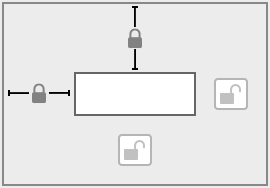
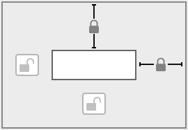
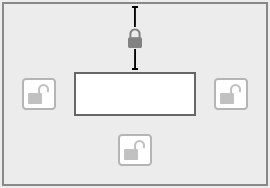
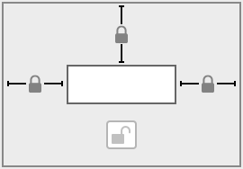
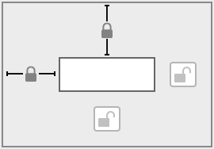
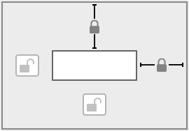
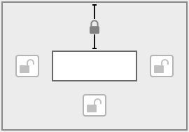

窗口为原始大小时对象的位置和宽度 | 已调整大小的窗口中对象的位置 | 自动调整大小设置 | 调整窗口大小后对象的对齐方式和大小 |
 | 对象左对齐且不扩展或移动。 | ||
 | 对象右对齐，并移到布局、选项卡控件、滑动控件或入口的右边距。 | ||
| 对象扩展以达到布局、选项卡控件、滑动控件或入口的左右边距。 | ||
 | 对象与布局中心保持固定的距离。 |
当调整 FileMaker Pro Advanced 窗口大小时，可以将对象设置为自动调整大小或者水平或垂直移动。如果页面宽度大于要查看或打印的布局宽度，则水平设置也适用于预览模式和打印。
设置布局对象调整大小时，它们会与要定位到的对象之间保持固定的距离。这样，在调整 FileMaker Pro Advanced 窗口大小时，对象可以移动、扩展或收缩。
定位点是对象所在的布局、选项卡或滑动控件或者入口边距。默认情况下，对象会定位在布局或页面的顶部和左侧。
1. 在布局模式下，选择布局上的一个或多个对象。
2. 在"检查器"中，单击"定位" 选项卡。
3. 在"自动调整大小"区域中，选择指示要将对象的哪一侧定位到布局、选项卡控件、滑动控件或入口边距的线条。
例如，要允许对象在布局上保持其水平位置，且在窗口变宽时扩展右侧，请保留选定默认的左侧和顶部定位，并选择右侧定位。

位于选项卡控件、滑动控件、弹出框上或者入口中的对象符合以下规则：
•对象会定位到选项卡控件、滑动控件、弹出框或入口的边界，而不是窗口或布局部分边界。例如，如果将选项卡控件定位到右侧，而将选项卡控件内的对象定位到左侧，则这些对象会靠选项卡控件的左侧而不是窗口的左侧对齐。
•如果您希望选项卡面板或滑动面板上的字段随面板一起调整大小，则必须同时为选项卡面板或滑动面板以及面板上的字段指定调整大小设置。如果未将面板设置为调整大小，那么不管如何指定其上单个对象的调整大小设置，这些对象都不会调整大小。此规则同样适用于弹出框：如果您希望弹出框上的字段随弹出框一起调整大小，则必须同时为弹出框上的字段以及弹出框指定调整大小设置。
•位于入口内的对象会定位到每行的顶部和/或底部，而不是整个入口的顶部和/或底部。
•如果设置入口对象通过将其顶部和底部定位到布局部分的边界来垂直调整大小，则可以设置该对象扩展，有两种实现方式：增加现有行的高度，或者在窗口变大时，保持行高固定，并显示更多的行。
•要增加现有行的高度，请至少将入口内的一个对象设为自动垂直调整大小。
•要在包含入口的对象变大时让行高保持不变但增加所显示的行数，请勿将入口内的任何对象设置为自动调整大小。
下表比较不同组合的水平调整大小设置的效果。垂直调整大小设置表现相同。在这些示意图中，外部矩形代表布局、选项卡控件、滑动控件或入口边距。内部矩形显示不同布局设置下已定位对象的对齐方式。因为包括了顶部定位设置，所以对象会在布局上保留其垂直方向。
窗口为原始大小时对象的位置和宽度 | 已调整大小的窗口中对象的位置 | 自动调整大小设置 | 调整窗口大小后对象的对齐方式和大小 |
 | 对象左对齐且不扩展或移动。 | ||
 | 对象右对齐，并移到布局、选项卡控件、滑动控件或入口的右边距。 | ||
| 对象扩展以达到布局、选项卡控件、滑动控件或入口的左右边距。 | ||
 | 对象与布局中心保持固定的距离。 |
重要事项 并排放置或垂直堆迭且同时定位到左右边距或上下边距的多个对象，会相对于布局、选项卡控件、滑动控件或入口边距（而不是参照彼此）移动或调整大小。因此，在调整窗口大小时，相邻的对象彼此之间不会保持相对的距离，而是会重叠。
•即使让 FileMaker Pro Advanced 窗口变得比原始布局还要小，对象也不会缩小到小于其原始大小。
•如果将调整大小选项应用于组合对象或对象的嵌套组中，就会将设置应用到组，而不是组中的对象。要将设置应用到单个对象而不拆分这些对象，请参阅编辑对象、布局部分和布局背景。
•虽然锁定对象不会阻止其调整大小，但无法更改已锁定对象的自动调整大小设置。请参阅保护对象不被更改。
•如果布局小于 FileMaker Pro Advanced 窗口的大小，并且您按照对象右侧或底部进行定位（弹出框除外），那么布局将扩展，以浏览模式或查找模式填充窗口，而以预览模式填充页面。
•当设为调整大小的对象在不同的视图中显示时，其表现如下：
•表单视图：对象水平定位到窗口两侧，并垂直定位到其外围布局部分的两侧。
•列表视图：对象进行水平定位。
•表视图：自动调整大小设置无效。
•如果您将对象放置在布局边缘的右侧，这些对象将不会自动调整大小，并且不会在浏览模式下的布局上显示。
•对于放置在顶部或底部导航部分且设置为自动调整大小的对象，则为垂直固定，而水平自动调整大小。